Gitunia
A keyboard-first terminal Git client: a real commit graph, first-class branches and worktrees, vim-style modal navigation. The mouse is optional but fully functional.
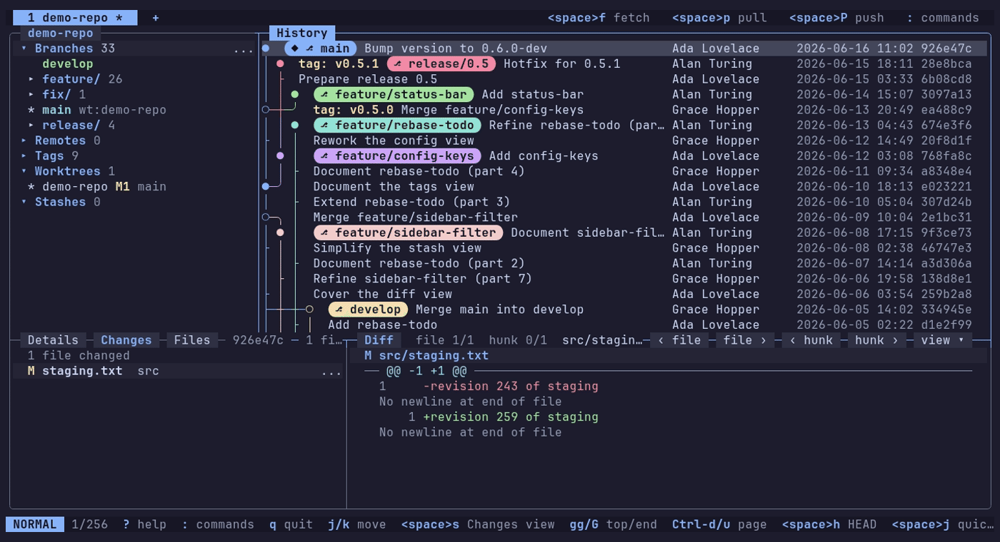
Features
Commit graph
A real commit graph that scrolls and searches through 100k+ commits, with branches and tags drawn on the history.

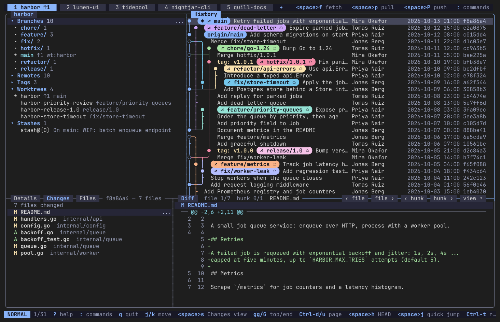
Tabs and repository picker
A standalone multi-repository client: open repositories in tabs, pick them with the repository picker and get your session back on the next start.

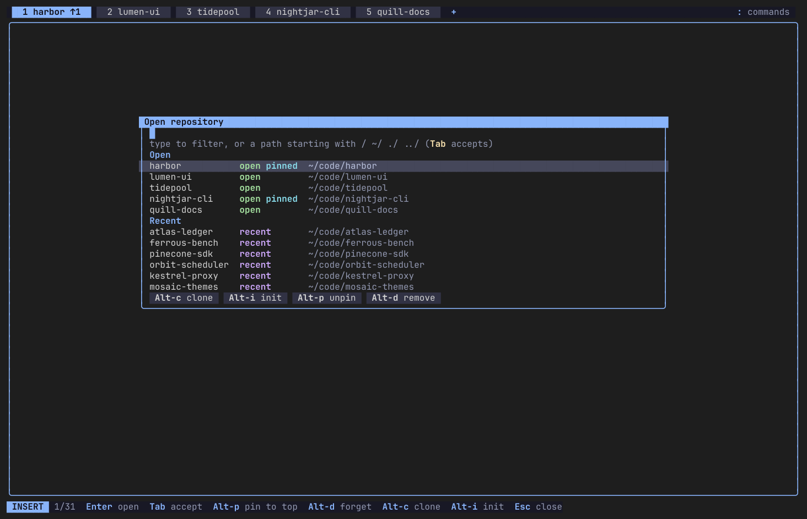
Help screen
Press ? to see the keys of the current view, with a filter to find a key fast.

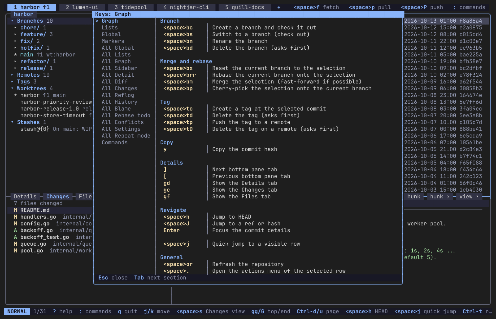
Staging and commits
Stage files, hunks and single lines, then commit or amend, with the message box in the same view.

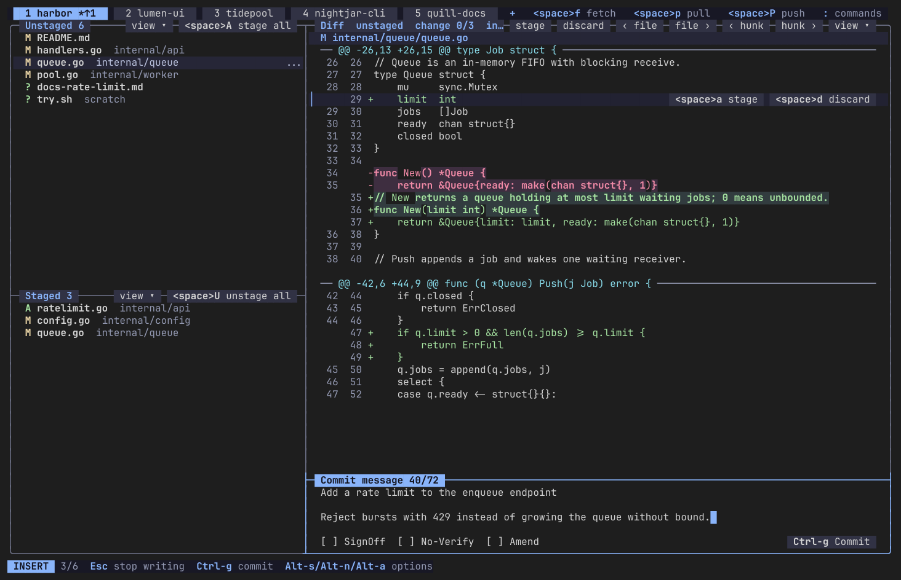
Diffs
Unified and side-by-side diffs, also between any two commits.

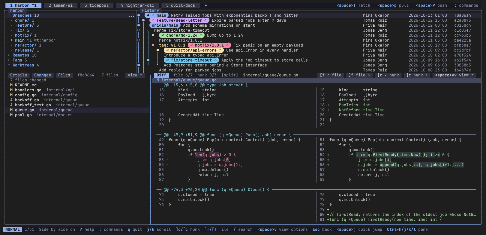
Worktrees
Worktrees are a first-class view next to branches: see which branch each one has checked out, switch to one or open it in its own tab.

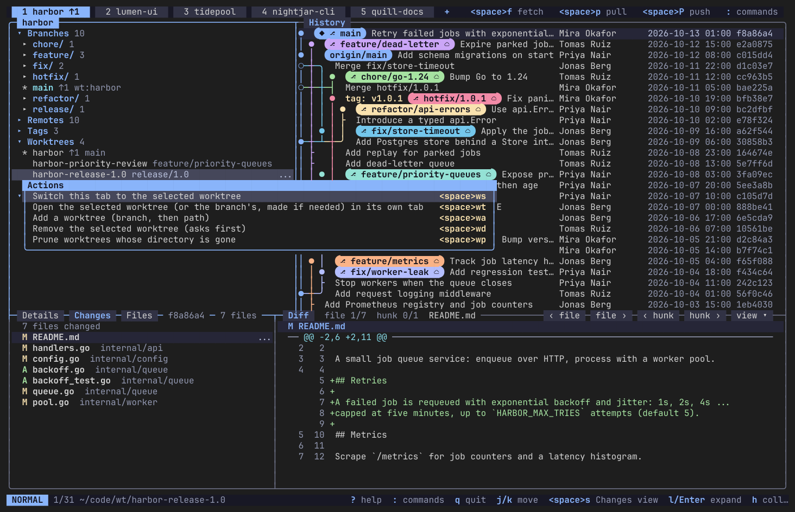
Stashes
Stashes are a first-class view in the sidebar.

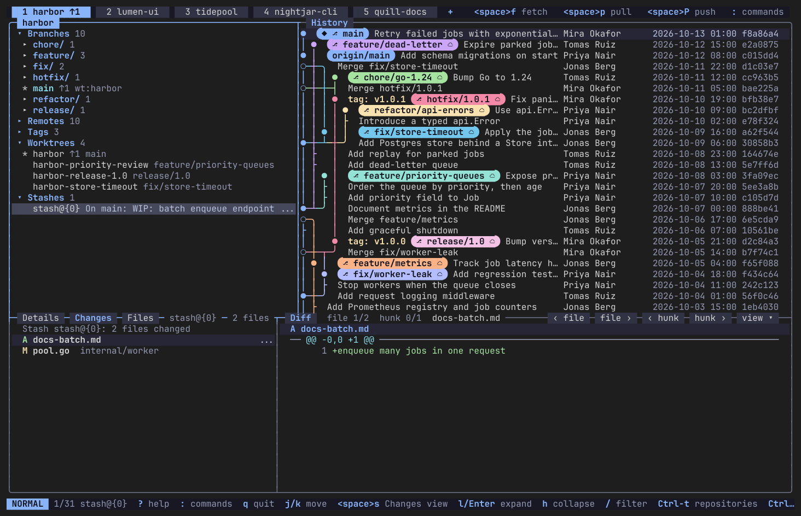
3-way conflict editor
Resolve merge conflicts in a 3-way editor: base, ours and theirs above, the result below.

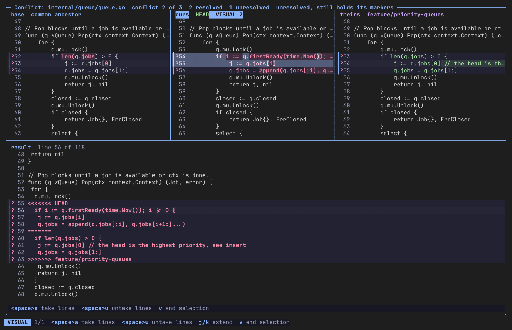
Interactive rebase
Edit the commits of an interactive rebase in a dedicated editor: squash, reword or drop.

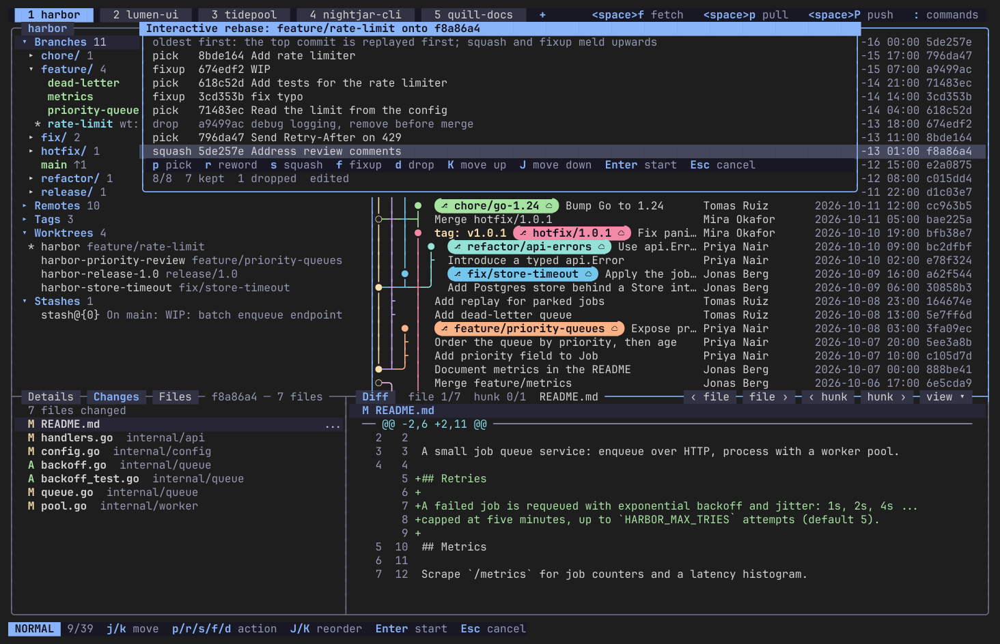
Reflog and undo
The reflog browser is the undo path for destructive actions: pick an earlier state and reset or branch from it.

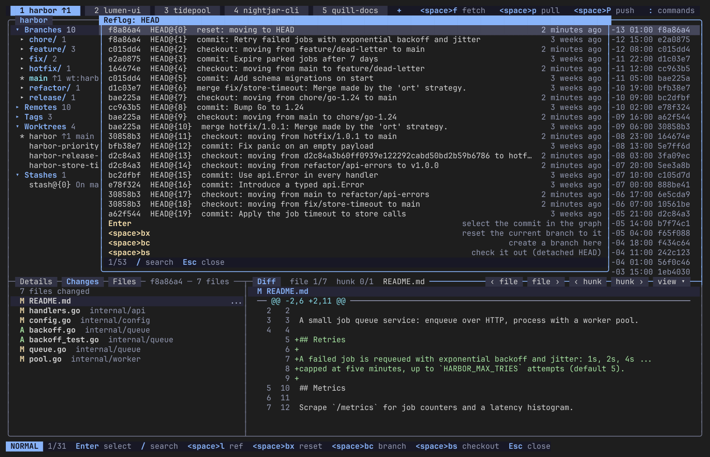
Command palette
Press : to search every command by name, with its key shown next to it. Keys are configurable and mouse support is full.

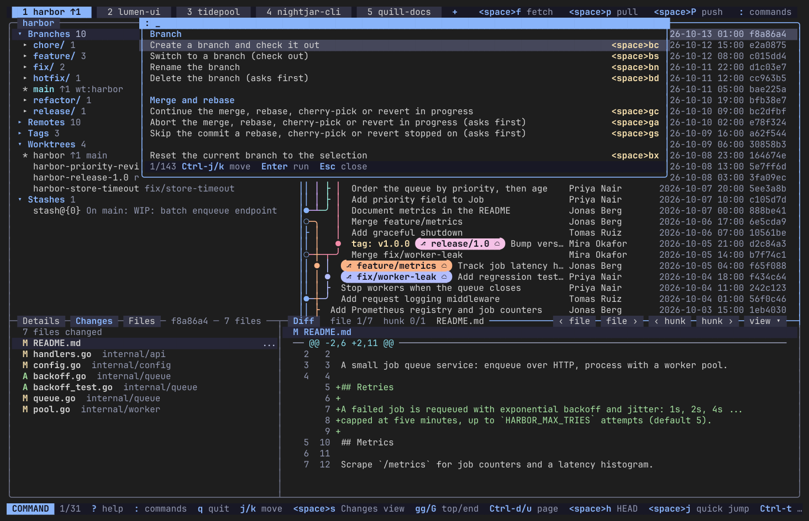
Install
Needs Git 2.43 or newer on your PATH. Take the files for your system from the latest release.
Debian / Ubuntu
sudo apt install ./gitunia_<version>_amd64.debFedora / RHEL
sudo dnf install ./gitunia-<version>-1.x86_64.rpmArch / Omarchy
sudo pacman -U gitunia-<version>-1-x86_64.pkg.tar.zstWindows
Expand-Archive gitunia-<version>-win-x64.zip
# put gitunia.exe on your PATHmacOS (Apple silicon)
tar xzf gitunia-<version>-osx-arm64.tar.gz
# put gitunia on your PATHmacOS should work, but is not fully tested yet, and the binary is unsigned.
Other Linux
tar xzf gitunia-<version>-linux-x64.tar.gz
# put gitunia on your PATHCheck any download against its .sha256 file. Building from source and more details are in the user guide.
Quick start
gitunia # restore last session, or open the picker
gitunia ~/Projects/foo # open a repository (any subfolder works)In the picker type to filter or type a path. Enter opens it in a tab. ? shows the keys of the current view, : opens the command palette, q quits.
Docs
If Gitunia saves you time, consider supporting its development.
☕ Buy me a coffee